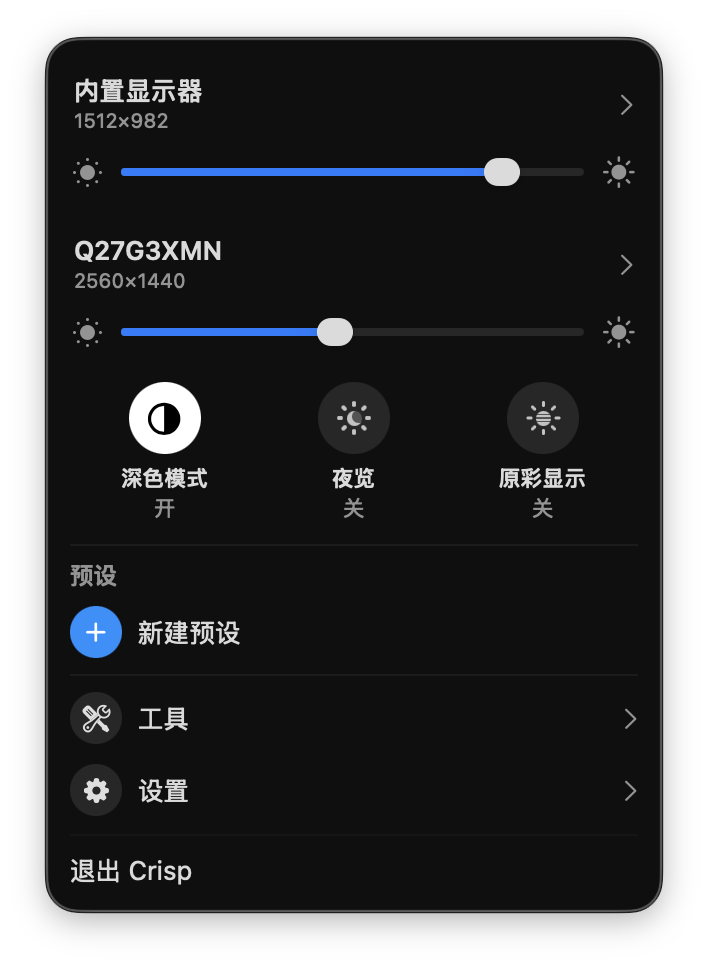

很多人把 1080p 或 1440p 的显示器接到 Mac 上，第一反应是：字怎么这么小？把缩放调大一点，画面又变糊了。这不是显示器的问题，而是 macOS 的处理方式。
为什么外接显示器接上 Mac 就「发虚」
MacBook 自带的 Retina 屏 PPI 很高（约 220），系统用 2 倍渲染再缩放，所以画面又清晰又不小。但对大多数外接显示器，macOS 并不提供这种「HiDPI 缩放分辨率」，你只剩两个都不理想的选择：
- 用原生分辨率：清晰，但界面元素按物理像素显示，27 寸 1440p 下会偏小、看久了累。
- 直接拉低分辨率：界面是大了，但等于让显示器跑非原生分辨率，整个画面发虚。
你真正想要的是「看起来像 1080p、实际按 2 倍渲染」的 HiDPI 模式——又大又清晰，和 MacBook 自带屏一个观感。macOS 把这个选项藏了起来。BetterDisplay、Lunar 都能解锁，但相关功能要付费。
Crisp 是什么
Crisp 是一个免费、开源（MIT）的 macOS 菜单栏 App，专门补上这些系统藏起来的能力。它把界面做得尽量接近系统原生的显示器控制中心，点一下菜单栏图标就能调，不用进系统设置里翻。

上手：开启 HiDPI
1. 安装。推荐用 Homebrew，不会有任何安全警告：
$ brew install --cask didriksg/tap/crisp
也可以到 GitHub Releases 下载 DMG。DMG 未签名，首次打开时右键 App 图标选「打开」，或运行一句 xattr -dr com.apple.quarantine /Applications/Crisp.app 即可。
2. 开启 HiDPI。点菜单栏图标，展开对应的外接显示器，打开 HiDPI。2K 及以上的显示器会自动配好可用的缩放分辨率。首次为某台显示器开启时，需要输入一次管理员密码（写入的是系统保护目录），之后切换免密。
3. 选一档缩放分辨率。以 27 寸 1440p 为例，「看起来像 1920×1080」（按 2 倍渲染）通常是清晰度和空间的最佳平衡点。
除了缩放，还能做什么
- 亮度：外接屏走 DDC 直接控制硬件（不支持 DDC 的用 gamma 兜底），键盘亮度键会作用在光标所在那块屏上，还能压到比硬件最低亮度更暗。
- 预设：把分辨率、亮度、排列存成一套，自定义图标和颜色，一键切换。
- 显示器排列：拖拽摆位、一键切换主显示器。
- 断开 / 重连显示器：从菜单里关掉某块物理屏再打开（Apple Silicon，睡眠唤醒后记住状态）。
- 系统开关：深色模式、夜览、原彩显示，一键切换。
- 色彩：ICC 配置切换、gamma / 对比度微调。
- 更多：虚拟显示器、隐藏刘海、自动亮度跟随内建屏、合并亮度滑块、开机启动。
和 BetterDisplay / Lunar 的区别
功能上高度重合，最大的区别是价格：Crisp 完全免费，没有 Pro 分层、没有授权码。BetterDisplay 和 Lunar 会把断开显示器、色彩调节、自动亮度跟随等放进付费版，这些在 Crisp 里都是免费的。开源（MIT），代码可查，也可以自己编译。
要求 macOS 15 及以上；macOS 26 上面板会用原生的 Liquid Glass 效果。已做简体中文本地化。